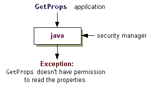

As you saw in the previous step, the Java runtime does not automatically install a Security Manager when it runs an application. To apply the same security policy to an application found on the local file system as to downloaded unsigned applets, you can invoke the interpreter with the new-Djava.security.managercommand line argument.To execute the
GetPropsapplication with the default security manager, type the following:Here's the output from the program:java -Djava.security.manager GetPropsC:\TEST>java -Djava.security.manager GetProps About to get os.name property value The name of your operating system is: WindowsXP About to get java.version property value The version of the JVM you are running is: JDK 1.6.0 About to get user.home property value Caught exception java.security.AccessControlException: access denied (java.util.PropertyPermission user.home read)The process is shown in the following figure.

The Java runtime loads a default policy file by default and grants all code permission to access some commonly useful properties such as"os.name"and"java.version". These properties are not security-sensitive, so granting these permissions does not normally pose a security risk.The other properties
GetPropstries to access,"user.home"and"java.home", are not among the properties for which the system policy file grants read permission. Thus as soon asGetPropsattempts to access the first of these properties ("user.home"), the security manager prevents the access and reports anAccessControlException. This exception indicates that the policy currently in effect, which consists of entries in one or more policy files, doesn't allow permission to read the"user.home"property.
By default, the system policy file located at:
Windows: java.home\lib\security\java.policy UNIX: java.home/lib/security/java.policyNote that java.home represents the value of the"java.home"property, which is a system property specifying the directory into which the JRE was installed. Thus if the JRE was installed in the directory namedC:\jdk\jreon Windows and/jdk/jreon UNIX, the system policy file is located atWindows: C:\jdk\jre\lib\security\java.policy UNIX: /jdk/jre/lib/security/java.policyHere is a copy of the default policy file.